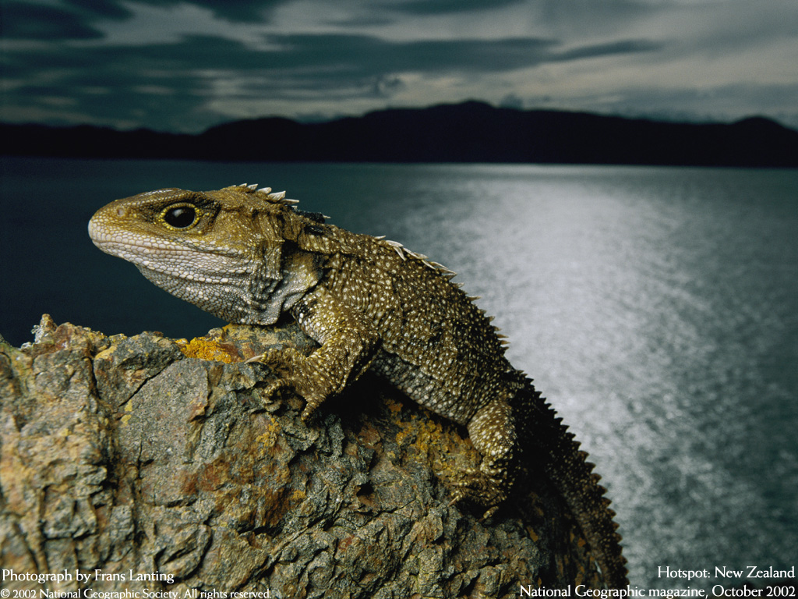
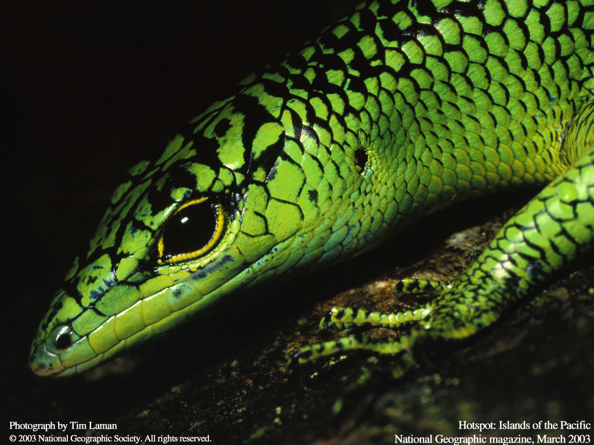
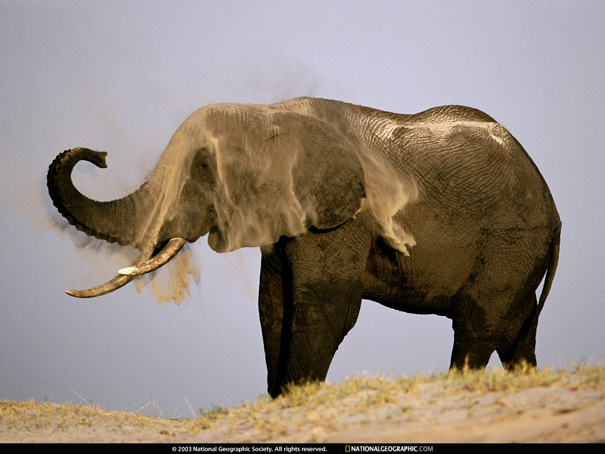

Snowy Owls
By Daniel J. Cox, December 2002
Zebras
By Anum and Manoj Shah, September 2003

Flashy Feathers
By Richard Hamilton Smith, January 2002

Islands of the Pacific
By Tim Laman, March 2003
Afrian Wolves
By Anup Shah, March 2006
